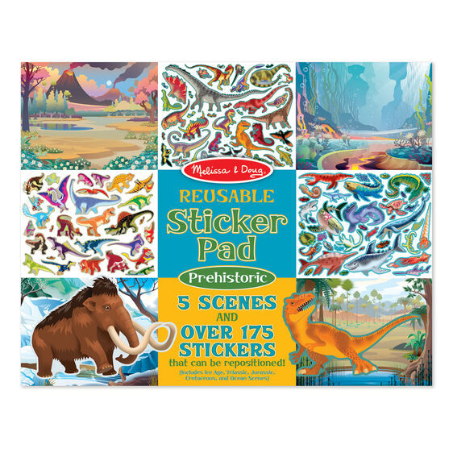
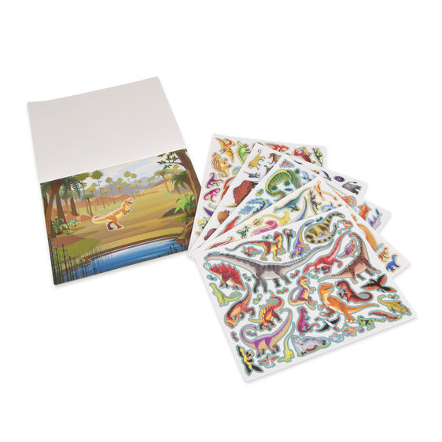

Reusable Sticker Pad - Prehistoric
Sticker Pads
R170Extra-large sticker-activity pad with Prehistoric theme Includes 5 colorful backgrounds and 185+ cling-style, repositionable stickers Removable background scenes include Prehistoric ocean, Triassic, Jurassic, cretaceous, and ice age Promotes fine motor skills and creative play WARNING: Choking Hazard - Small parts. Not for children under 3 yrs. Fill the reusable scenes with more than 175 cling-style stickers, and create your own dinosaur-filled prehistoric adventures! To set the scene and spur the imagination, five glossy, full-color backgrounds (prehistoric ocean, Triassic, Jurassic, Cretaceous, and Ice Age) feature lots of space to play creatively. They pull out cleanly too--so this cool set is easy to share. The colorful, kid-friendly stickers (for ages three and older), are organized by time period, stick easily, pull up cleanly, and can be used again and again to keep bringing prehistoric stories to life.
Enquire about this product
Reusable Sticker Pad - Prehistoric at Kids Corner KZN
Reusable Sticker Pad - Prehistoric is part of our Sticker Pads collection. Kids Corner KZN stocks toys for learning, pretend play, creative play, gifting and everyday childhood discovery in South Africa.
Browse more Sticker Pads toys